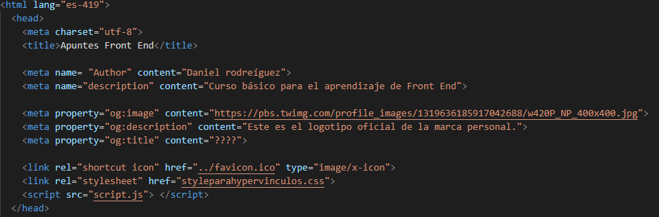

Partes y código
En este artículo vamos a diferenciar las partes básicas que contiene un archivo .html
Todo archivo .html tiene como mínimo dos partes globales: el <head> y el <body>.
Partes del <head>
El <head> es la parte del documento .html que contiene la información necesaria para que sucedan los siguientes casos:
- Que el archivo .html contenta la referencia de los carcateres que van a usarse al visualizar el contenido. el código de caracteres que más
idiomas engloba es el utf-8.
- Que el archivo .html contenga el título de la página.
- Que el archivo .html contenga información del autor del código.
- Que el archivo .html contenga información relativa al contenido del archivo. Esta información suele ser la información SEO de refencia de la página
- Que el archivo .html contenga información de la propiedad del propio archivo.
- Que el archivo .html contenga el enlace al favicon.ico que será usado en los exploradores
- Que el archivo .html contenga enlaces de referencia a los archivos .css o a los scripts que van a ser usados para completar el archivo
Toda esta información no es legible desde el navegador, solamente accesible desde el propio código fuente del archivo .html
*nota: el elemento lang=".." se refiere al idioma al que va dirigido este documento. El que abajo se muestra es la referencia al
Español válido para España y latinoamérica.
*nota: el favicon es el elemento que muestra el logotipo en la pestaña del navegador.
Ejemplo visual:

Partes del <body>
- Encabezado: <header>: Normalmente contiene el nombre de la página o el logotipo. suele ser invariable, siempre muestra la misma información dentro de un mismo proyecto.
- Menú de navegación: <nav>. Suele incluir un listado con enlaces a sitios como Home, Sobre nosotros, Proyecto o contacto.
- Contenido principal: <main>, con varias subsecciones (además de la barra lateral) representadas por los elementos <article>, <section> y <div>.
- Barra lateral: <aside> a menudo colocada dentro de <main>. Son o suelen ser enlaces de interés a otras páginas.
- Pie de página: <footer>.
Ejemplo de un estructura básica.
Envolturas no semánticas
A veces hay situaciones en las que no encuentras un elemento semántico adecuado para agrupar ciertos elementos o enblogar cierto contenido.
Podrías querer agrupar ciertos elementos para referirte a ellos como una entidad que comparta cierto CSS o JavaScript.
Para casos como estos, HTML dispone del elemento %lt;div> y el elemento <span>. Preferentemente estos elementos se deberán utlizar
con sus atributos (<class>), para conferirles algún tipo de etiquetado que permita determinarlos con facilidad.
<span> es un elemento no-semántico que se utioliza en el interior de una línea. Se utiliza cuando no se nos ocurre el uso de ningún
otro elemento semántico de tecto en el que incluir el contenido, o sino se desea añadir ningún significado específico. Por ejemplo:
<p>El rey volvió ebrio a su habitación alrededor de la 01:00, y sin duda la cerveza no le ayudaba
cuando cruzó tambaleante la puerta <span class="editor-note">[nota del editor: en este instante de la
representación, deberían atenuarse las luces]</span>.</p>
En este caso, la nota del editor solo proporcionará información extra para el editor de la obrra; se supone que estos elementos no
incluyen contenido extra importante. Para los usuários sin discapacidad visual, quizas debamos usar CSS para diferenciar sutilmente estas notas del texto principal.
<div> es un elemento de bloque no-semántico; lo utilizarás cuando no se te ocurra el uso de otro elemento semántico mejor, o si no deseas añadir ningún significado concreto.
Por ejemplo, imagina un carrito de compras que puedes pulsar en cualquier momento durante tu estancia en una tienda virtual:
<div class="chopping-cart">
<h2> Carrito de compras </h2>
<ul>
<li>
<p>%lt;a href=""><strong> Pendientes de plata</strong></a>:$99.95.</p>
<img src="../products/3333-0985/" alt="pendientes de plata">
</li>
<li>
...
</li>
</ul>
<p> Importe total: 237.89</p>
</div>